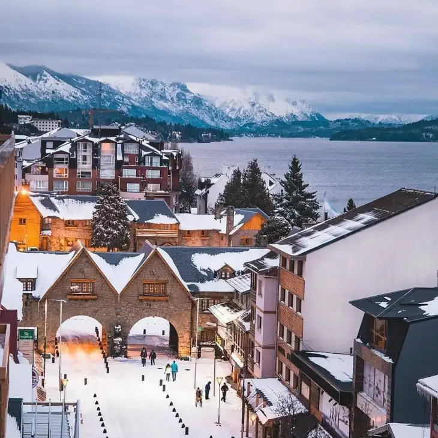
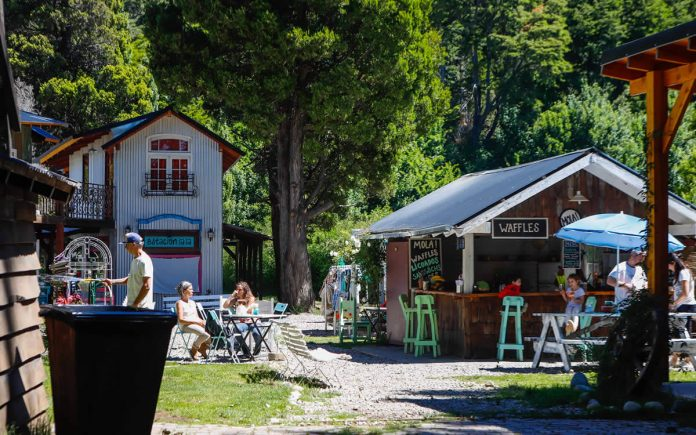

Argentina, oficialmente denominada República Argentina es un país soberano de América del Sur, ubicado en el extremo sur y sudeste de dicho subcontinente. Adopta la forma de gobierno republicana, democrática, representativa y federal.
Consulta el clima de la ciudad que quieras visitar
DESTINOS OFRECIDOS
SAN CARLOS DE BARILOCHE
San Carlos de Bariloche (comúnmente llamada Bariloche) es una ciudad en la región de la Patagonia argentina. Limita con Nahuel Huapi, un gran lago glacial rodeado de montañas de los Andes. Bariloche es conocida por su arquitectura al estilo alpino de Suiza y su chocolate
También es una base popular para el excursionismo y el esquí en las montañas cercanas, y para explorar los alrededores del Distrito de los Lagos.
3 LUGARES TURÍSTICOS DE BARILOCHE QUE DEBES CONOCER
- CIRCUITO CHICO
- LAGO MORENO
- COLONIA SUIZA 
Uno de las principales actividades que hacer en Bariloche principalmente en la época de verano es el Circuito Chico, un recorrido circular de 65 kilómetros que puedes realizar en auto o en bicicleta (hay diversos puntos en los que alquilar una de ellas a lo largo del camino). Los principales atractivos de este lugar son la Villa Llao Llao, rodeada por dos lagos, y algunos miradores como el del Lago Escondido, el del Puente Arroyo La Angostura y el del muelle Bahía López.
Se trata de una acumulación de agua de origen glaciar que está dividida en dos partes: la oeste y la este. Es el único lago de la zona en el que se puede pescar (con permiso) durante todo el año y, además, sus aguas son más templadas que las del resto de la región, por lo que atrae a muchos bañistas cuando hace buen tiempo. En sus orillas se encuentran Colonia Suiza y Villa Llao Llao, por lo que podrás conocerlo cuando visites estos pequeños pueblos.
El sur de Argentina y de Chile fue, durante muchos años, el destino de grandes grupos de emigrantes europeos. Aquí llegaban para empezar una nueva vida y aquí dejaron la huella de sus propias costumbres. Esto se ve reflejado en Colonia Suiza, un hermoso lugar no solo por la naturaleza que la rodea, sino también por las construcciones típicas de este país europeo que llaman la atención a todos los turistas que hasta aquí llegan. ,
SALTA
Salta es una ciudad del noroeste de Argentina, capital de la provincia homónima. Se encuentra ubicada en el sector norte del Valle de Lerma. Su superficie aproximada es de 120 km². Es también la ciudad más poblada de la provincia, la segunda del NOA y la séptima del país.

Ciudad con alma Salta es una de las más pintorescas ciudades de Argentina. Las antiguas casonas con balcones con flores, las iglesias que datan de más de tres siglos atrapan a los visitantes; la arquitectura característica regresa el tiempo al pasado colonial para ser protagonista directo de la rica historia salteña.
3 LUGARES TURÍSTICOS DE SALTA QUE DEBES CONOCER
- PARQUE LOS CARDONES
- EL TREN DE LAS NUBES
- IRUYA

Tiene más de 64.000 hectáreas y cardones que custodian los caminos del antiguo Imperio Inca. Podés explorar senderos caminando, hacer paseos en bici u observar aves, entre otras actividades. El tip: desde la recta del Tin Tin se ve uno de los cardonales más grandes de Sudamérica.
De fama internacional, el Tren a las Nubes ofrece un recorrido que parte del pueblo de San Antonio de los Cobres hacia el Viaducto La Polvorilla y alcanza una altura de 4.220 msnm, lo que lo convierte en uno de los recorridos ferroviarios más altos del mundo.En su camino atraviesa paisajes únicos de la Puna y una obra de ingeniería colosal que incluye puentes, túneles y viaductos.

Un puñado de casas de adobe y piedra y callecitas angostas y empinadas forman el paisaje de este pueblo que parece colgar de la montaña. Aunque está en Salta, la única forma de llegar es a través de Jujuy, partiendo de Humahuaca.
MISIONES
Es una de las veintitrés provincias de la República Argentina Más del 80% de sus límites son internacionales, lindando al Norte y al Este con La República del Brasil, y al Oeste con la República del Paraguay. Una pequeña porción de su territorio al sur es limítrofe con la Provincia de Corrientes. Por su ubicación, forma parte de la región denominada «El Corazón de la Cuenca del Plata«, por la posición privilegiada en el mapa de la América del SuR
La provincia de Misiones lleva un nombre que recuerda a los pueblos jesuíticos, pero su historia se funda en las raíces de la América indígena conectada con la naturaleza
3 LUGARES TURÍSTICOS DE MISIONES QUE DEBES CONOCER
- RUINAS DE SAN IGNACIO
- CATARATAS DEL IGUAZÚ
- SALTO ENCANTADO
Un sitio guaraní jesuítico restaurado en su totalidad, donde se puede apreciar en su plenitud la arquitectura, el urbanismo y el arte barroco-americano plasmado en los muros del templo, su gran fachada y la residencia de los Padres Jesuitas.

Las magníficas Cataratas del Iguazú, una de las Siete Maravillas del Mundo, están conformadas por 275 saltos de agua que caen desde las más diversas alturas. La más alta, de 80 metros, es conocida como la Garganta del Diablo.
El Parque Provincia Salto Encantado es un área protegida de 13.227has. conservando una gran porción de Selva Misionera junto con su flora, fauna y cursos de agua, siendo el arroyo Cuñá Pirú el que permite la caída del Salto Encantado, siendo el más alto pero no el único, ya que dentro del área existen 4 cascadas de menor tamaño, a las que se accederá a través de senderos agrestes.
PAQUETES TURISTICOS
| DESTINO | DÍAS | INCLUYE | PRECIO FINAL POR PERSONA |
|---|---|---|---|
| San Carlos de Bariloche | 5 dias y 4 noches | Hotel 3 estrellas, desayuno incluido y una excursión a Circuito Chico | 2500usd |
| Salta | 8 dias y 7 noches | Hotel 3 estrellas, vuelos incluidos y una excursión a Iruya | 4500usd |
| Misiones | 5 dias y 4 noches | Hotel 3 estrellas, desayuno incluido y una excursión a las Cataratas del Iguazú | 2500usd |
| Conociendo Argentina | 15 dias y 14 noches | Recorre las 3 ciudades más importantes del país. All inclusive | 6000usd |